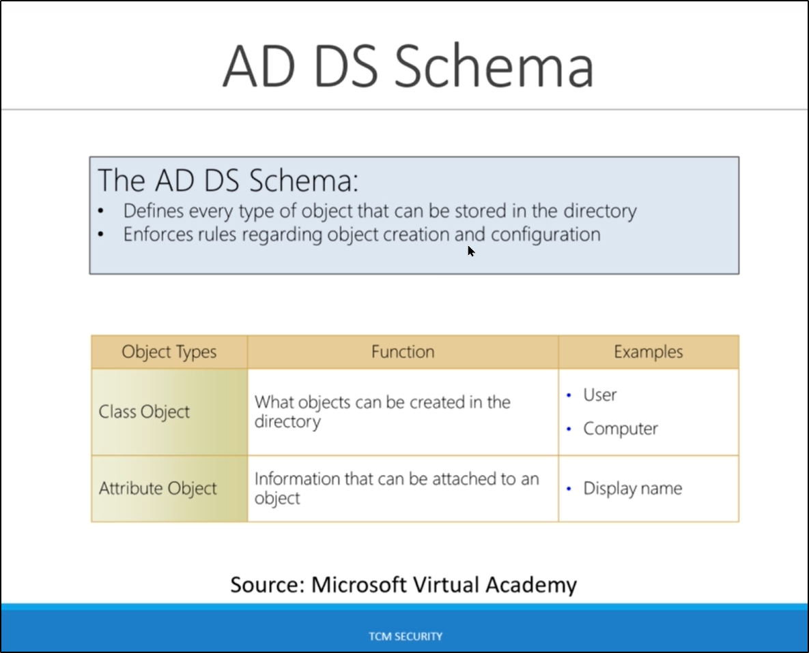

you can think of that as a rule book or blueprint.
Basically what it does it contains definitions of every object that can be created in active directory.

Domains are what is used to group things together. You can group our objects together in a single organization.
If you have a like small business you might just have one domain that you're on. and this one domain has all the user's computers every object inside of it because all you need is one domain.
So we have one domain and it funtions like a domain controller. And as you can see it says "an administrative boundary for applying policies to groups of objects" and this looks very familiar to what a domain controller was. Except now we're just managing it all in one what is called a domain.

in here contoso.com is a parent domain and others are children domains.

Forest > Tree > Domain

Ous is in inside of active directory.


Objects what is going to be inside of our Ous in above list they can be object. Organizational Units consists of objects.